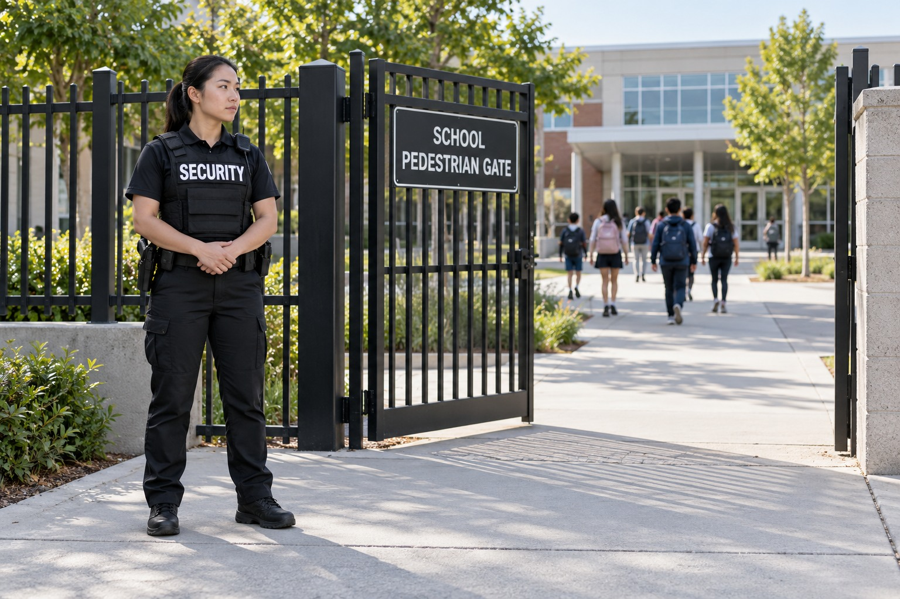

Schools and Campuses

A campus brings together students, teachers, administrators, families, contractors and visitors. Security personnel can support the distinction between authorized campus access and people who need approval from the school. The officer’s role should be understandable to the administration and consistent with the expectations of the institution.
Security That Supports the School Community
Paradigm reviews the service with the appropriate school representative. Public, private and charter school settings may have different approval processes and staffing requirements. The proposed assignment must account for the school’s own policies and expectations. This page does not assume that a general security qualification satisfies every requirement for working at a particular school.
Visitor Access and Campus Observation
School security can include observation of campus entry areas and communication about unauthorized visitor concerns. Officers can help direct visitors to the school’s approved contact and support the existing access process. This work is distinct from making educational decisions or resolving matters assigned to administrators.
Campus observation can also involve reporting disturbances or conditions requiring attention. The service should establish who receives information and who makes the relevant school decisions. The public description focuses on these responsibilities rather than revealing campus security procedures or describing operational details that should remain with authorized staff.
School Events and Administrative Coordination
Games, graduations, performances and other school functions can create a separate event security need. Paradigm can review event coverage alongside ordinary campus security. The responsibilities of an event assignment should be clear to the school, venue personnel and organizers so that security support fits the purpose of the gathering.
Security personnel can communicate with administration and appropriate responders when necessary. They do not replace school leadership, counselors or emergency services. BSIS publishes California security guard registration requirements. Assignment specific suitability and any additional requirements imposed by the school are confirmed before the service is represented as ready for that campus.
School Security in Los Angeles and San Bernardino Counties
Paradigm serves schools and campus clients across Los Angeles County and San Bernardino County. Requests may involve regular campus coverage, visitor related concerns or a particular school function. The consultation distinguishes those needs and identifies the responsibilities requested by the administration.
Contact Paradigm to describe your campus and the purpose of the proposed security assignment. We will review the service available, its relationship with school staff and the requirements that need confirmation. Sensitive campus information stays within the private conversation rather than becoming part of a public description of your school.